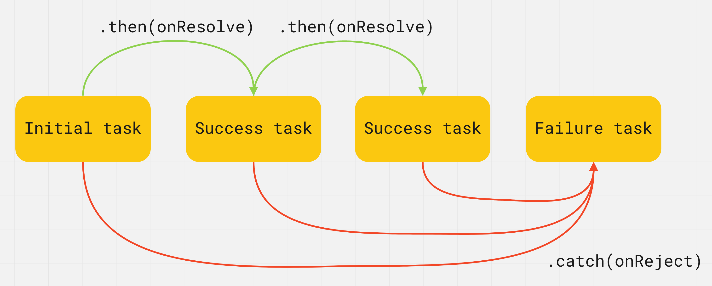

Проміси
Полі обіцяє спекти торт на мій день народження через два тижні. Якщо все буде добре і вона не захворіє, у мене буде торт. Якщо Полі буде погано себе почувати, то не зможе спекти торт. В будь-якому разі, ми все одно влаштуємо вечірку. Обіцянка - це не гарантія виконання, ми не знаємо, чи виконає її, чи ні. У програмуванні також є завдання, результат яких ми дізнаємося тільки у майбутньому.

Promise (обіцянка, проміс) - об'єкт, що представляє поточний стан асинхронної операції. Це обгортка для значення, невідомого на момент створення промісу. Дозволяє обробляти результати асинхронних операцій таким чином, якби вони були синхронними: замість кінцевого результату асинхронної операції, повертається своєрідна обіцянка отримати результат у майбутньому.
Проміс може бути у трьох станах:
- Очікування (pending) - початковий стан під час створення промісу.
- Виконано (fulfilled) - операція виконана успішно з будь-яким результатом.
- Відхилено (rejected) - операція відхилена з помилкою.
На момент створення проміс знаходиться в очікуванні (pending), після чого може завершитися успішно (fulfilled), повернувши результат (значення), або з помилкою (rejected), повернувши причину. Коли проміс переходить у стан fulfilled або rejected - це назавжди.
ЦІКАВО:
Коли проміс виконаний або відхилений, то кажуть, що він завершений
(settled). Це просто термін, який описує те, що проміс перебуває в
будь-якому стані, крім очікування.
Відмінності промісу і callback-функції:
- Колбеки - це функції, обіцянки - це об'єкти.
- Колбеки передаються як аргументи з зовнішнього коду у внутрішній, а обіцянки повертаються з внутрішнього коду у зовнішній.
- Колбеки обробляють успішне або неуспішне завершення операції, обіцянки нічого не обробляють.
- Колбеки можуть обробляти декілька подій, обіцянки пов'язані тільки з однією подією.
Створення
Проміс створюється як екземпляр класу Promise, який приймає функцію (executor) як аргумент і відразу викликає її, ще до створення і повернення промісу.
const promise = new Promise((resolve, reject) => {
// Asynchronous operation
});
Функція executor повідомляє екземпляр (проміс), коли і як операція, з якою він пов'язаний, буде завершена. У ній можна виконувати будь-яку асинхронну операцію, після завершення якої, потрібно викликати resolve() - у разі успішного виконання (стан fulfilled), або reject() - у разі помилки (стан rejected). Значення, що повертається цій функції, ігнорується.
- resolve(value) - функція для виклику у разі успішної операції. Переданий їй аргумент буде значенням виконаного промісу.
- reject(error) - функція для виклику у разі помилки. Переданий їй аргумент буде значенням відхиленого промісу.
// Change value of isSuccess variable to call resolve or reject
const isSuccess = true;
const promise = new Promise((resolve, reject) => {
setTimeout(() => {
if (isSuccess) {
resolve("Success! Value passed to resolve function");
} else {
reject("Error! Error passed to reject function");
}
}, 2000);
});
У змінну promise буде записаний проміс (об'єкт) у стані pending, а через дві секунди, щойно буде викликаний resolve() або reject(), проміс перейде у стан fulfilled або rejected, і ми зможемо його обробити.
Метод then()
Код, якому потрібно зробити щось асинхронно, створює обіцянку і повертає її. Зовнішній код, отримавши обіцянку, навішує на неї обробники. Після завершення процесу асинхронний код переводить обіцянку у стан fulfilled або rejected, і автоматично викликаються обробники у зовнішньому коді.
Після створення промісу, його результат обробляється в callback-функції. Код пишеться таким чином, ніби ми думаємо про те, що може статися, якщо проміс виконається або не виконається, не думаючи про часові рамки.
Метод then() приймає два аргументи - callback-функції, які будуть викликані, коли проміс змінить свій стан. Результат промісу, значення або помилку, вони отримають як аргументи.
promise.then(onResolve, onReject)
- onResolve(value) - буде викликана у разі успішного виконання промісу і отримає його результат як аргумент.
- onReject(error) - буде викликана у разі виконання промісу з помилкою і отримає її як аргумент.

У прикладі, callback-функція onResolve буде викликана через дві секунди, якщо обіцянка успішно виконається, а onReject буде викликана через дві секунди у тому разі, якщо обіцянка виконається з помилкою.
// Change value of isSuccess variable to call resolve or reject
const isSuccess = true;
const promise = new Promise((resolve, reject) => {
setTimeout(() => {
if (isSuccess) {
resolve("Success! Value passed to resolve function");
} else {
reject("Error! Error passed to reject function");
}
}, 2000);
});
// Will run first
console.log("Before promise.then()");
// Registering promise callbacks
promise.then(
// onResolve will run third or not at all
value => {
console.log("onResolve call inside promise.then()");
console.log(value); // "Success! Value passed to resolve function"
},
// onReject will run third or not at all
error => {
console.log("onReject call inside promise.then()");
console.log(error); // "Error! Error passed to reject function"
}
);
// Will run second
console.log("After promise.then()");
ЦІКАВО:
Якщо функції onResolve і onReject містять складну логіку, їх, для
зручності, оголошують як зовнішні функції і передають в метод then()
за ім'ям.
Метод catch()
На практиці в методі then() обробляють тільки успішне виконання промісу, а помилку його виконання у спеціальному методі catch() для «відловлювання» помилок.

promise.catch(error => {
// Promise rejected
});
Колбек-функція буде викликана у разі виконання промісу з помилкою, і отримає її як аргумент.
// Change value of isSuccess variable to call resolve or reject
const isSuccess = true;
const promise = new Promise((resolve, reject) => {
setTimeout(() => {
if (isSuccess) {
resolve("Success! Value passed to resolve function");
} else {
reject("Error! Error passed to reject function");
}
}, 2000);
});
promise
.then(value => {
console.log(value);
})
.catch(error => {
console.log(error);
});
Метод finally()
Цей метод може бути корисним, якщо необхідно виконати код після того, як обіцянка буде дозволена (fulfilled або rejected), незалежно від результату. Дозволяє уникнути дублювання коду в обробниках then() і catch().

promise.finally(() => {
// Promise fulfilled or rejected
});
Колбек-функція не отримає жодних аргументів, оскільки неможливо визначити - виконана чи відхилена обіцянка. Тут буде виконуватися код, який необхідно запустити в будь-якому разі.
// Change value of isSuccess variable to call resolve or reject
const isSuccess = true;
const promise = new Promise((resolve, reject) => {
setTimeout(() => {
if (isSuccess) {
resolve("Success! Value passed to resolve function");
} else {
reject("Error! Error passed to reject function");
}
}, 2000);
});
promise
.then(value => console.log(value)) // "Success! Value passed to resolve function"
.catch(error => console.log(error)) // "Error! Error passed to reject function"
.finally(() => console.log("Promise settled")); // "Promise settled"
Ланцюжки промісів
Оскільки метод then() повертає проміс, перед його виконанням може минути деякий час, тому частина ланцюжка, що залишилася, буде чекати. У разі виникнення помилки в будь-якому місці ланцюжка, виконання всіх наступних then() скасовується, а управління передається методу catch(). Тому він знаходиться в кінці ланцюжка промісів.
const promise = new Promise((resolve, reject) => {
setTimeout(() => {
resolve(5);
}, 2000);
});
promise
.then(value => {
console.log(value); // 5
return value * 2;
})
.then(value => {
console.log(value); // 10
return value * 3;
})
.then(value => {
console.log(value); // 30
})
.catch(error => {
console.log(error);
})
.finally(() => {
console.log("Final task");
});
Промісифікація функцій
Уявімо, що у нас є асинхронна функція, яка виконує якусь асинхронну операцію, наприклад, запит на сервер. Для того щоб обробити результат, її доведеться спроектувати таким чином, що вона буде очікувати на два колбеки - для успішного запиту і для помилки.
const fetchUserFromServer = (username, onSuccess, onError) => {
console.log(`Fetching data for ${username}`);
setTimeout(() => {
// Change value of isSuccess variable to simulate request status
const isSuccess = true;
if (isSuccess) {
onSuccess("success value");
} else {
onError("error");
}
}, 2000);
};
const onFetchSuccess = user => {
console.log(user);
};
const onFetchError = error => {
console.error(error);
};
fetchUserFromServer("Mango", onFetchSuccess, onFetchError);
Зараз функція fetchUserFromServer() знає занадто багато про той код, який буде використовувати результат її роботи. Вона очікує колбеки і відповідає за їх виклик за певних умов. Тобто ми передаємо щось всередину функції (колбеки) і сподіваємося, що воно відпрацює правильно - це недобре.
Краще, якщо функція не зважає на той код, який буде використовувати її результат. Вона просто виконує якусь операцію і повертає результат своєї роботи у зовнішній код. Для того щоб повернути результат асинхронної операції, з функції необхідно повернути проміс. Промісифікація - це перетворення функції з колбеками таким чином, щоб вона не приймала колбеки, а повертала проміс.
const fetchUserFromServer = username => {
return new Promise((resolve, reject) => {
console.log(`Fetching data for ${username}`);
setTimeout(() => {
// Change value of isSuccess variable to simulate request status
const isSuccess = true;
if (isSuccess) {
resolve("success value");
} else {
reject("error");
}
}, 2000);
});
};
fetchUserFromServer("Mango")
.then(user => console.log(user))
.catch(error => console.error(error));
ЦІКАВО:
Більшість сучасних бібліотек ґрунтуються на промісах. У разі виклику
методу для асинхронної операції його результат доступний як проміс,
якому можна причепити обробники в методах then() і catch().